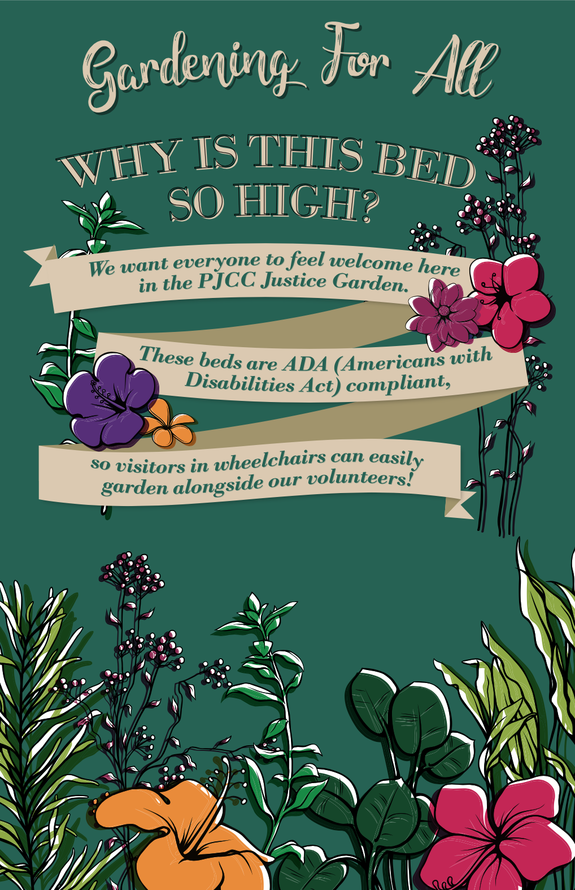
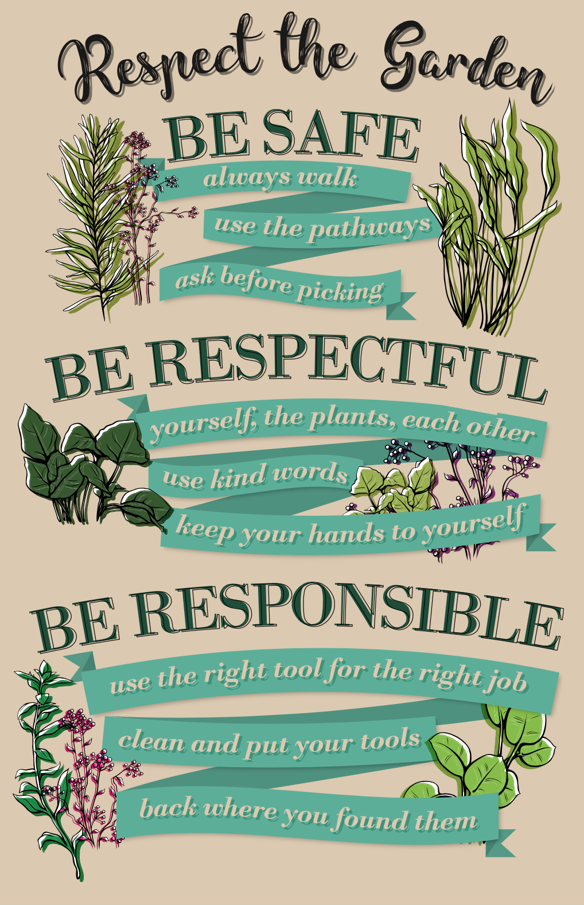
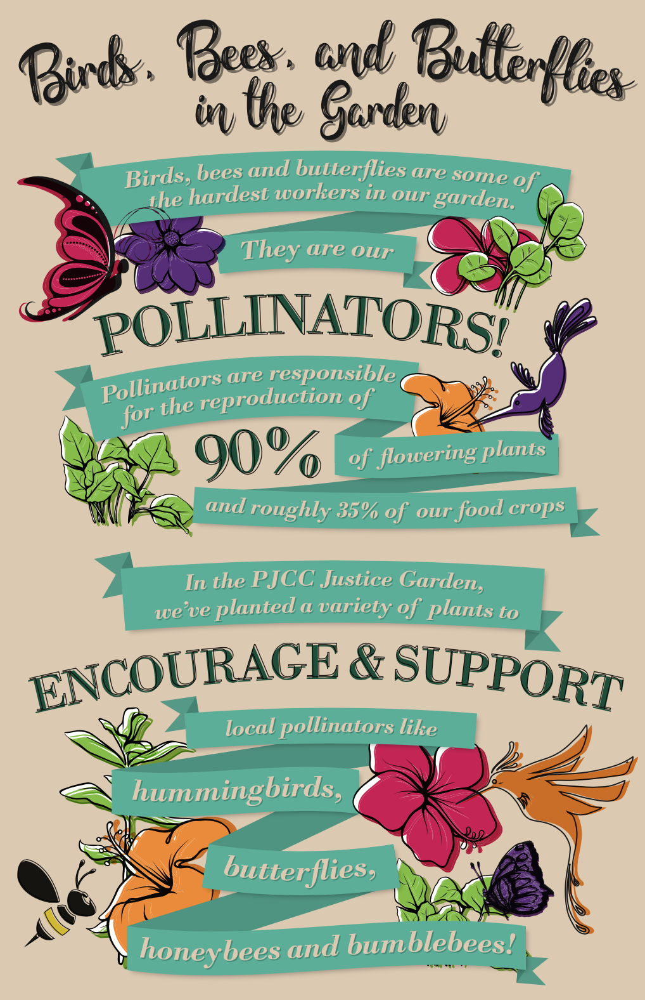

This was another project I worked on at the Peninsula Jewish Community Center. The employees who worked in the garden asked for new signs with a vintage and retro feel. After researching other garden signs and finding other images for inspiration, I drafted three different concepts for one sign. After discussion with my supervisors, we chose one concept, and I created the rest of the signs with the copy from the garden workers. I was given a lot of creative freedom for this project, which made it fun to experiment and explore before the finished product.
  